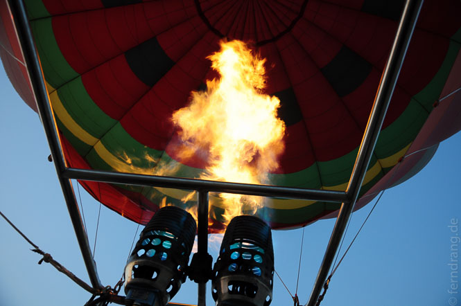
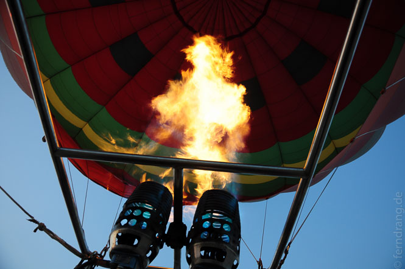
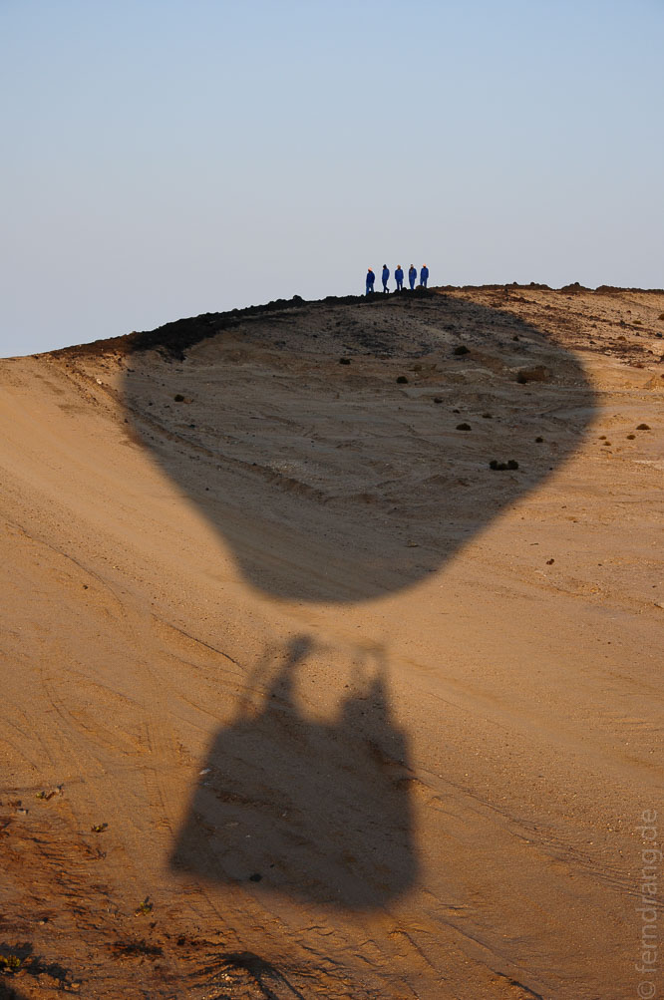
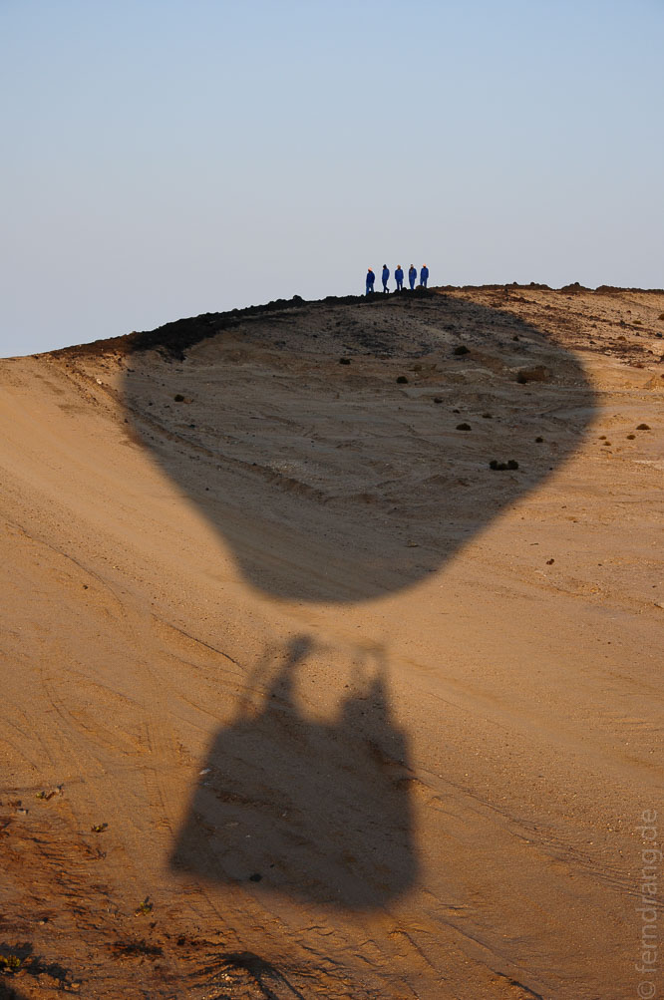
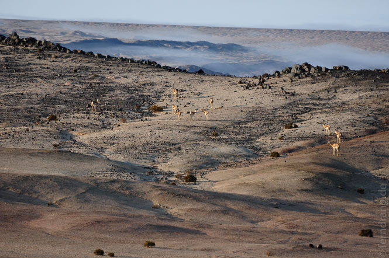
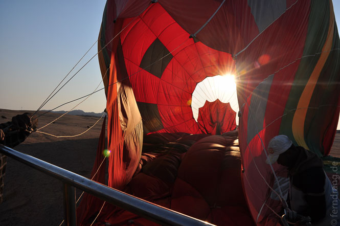
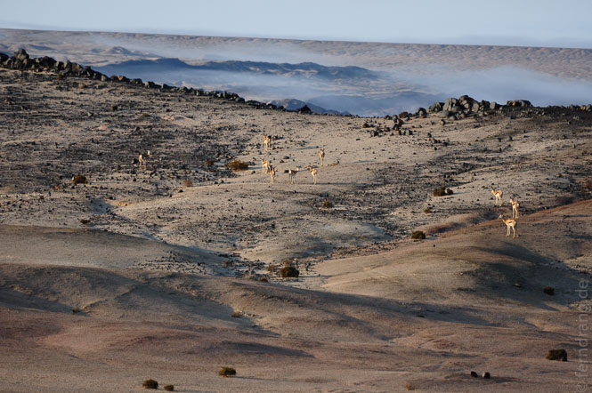
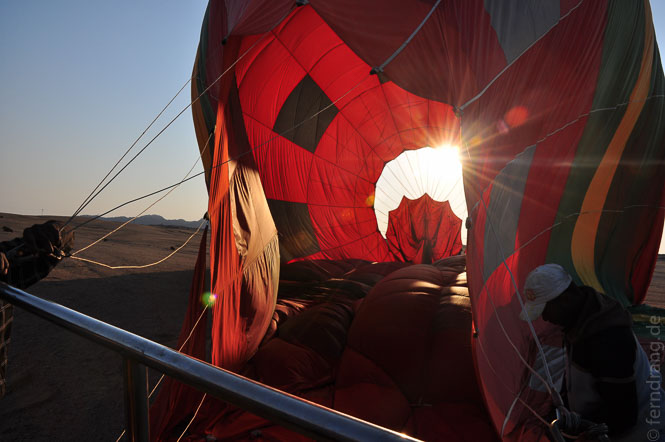

Zurück in Swakopmund mussten wir feststellen, dass Sonntags sogar viele Restaurants geschlossen sind. Trotzdem gibt es hier sehr viele Restaurants, in denen man auch sehr gut essen kann, sofern sie offen sind. Überhaupt mussten wir unser Bild von der Stadt etwas revidieren: Wenn die Sonne scheint - was sie manchmal tut - sehen zumindest die Fachwerkhäuschen ganz hübsch aus. Montags morgens erwacht die Stadt aus der Wochenendstarre und wirkt um die Hauptstraßen herum sogar fast geschäftig. Davon abgesehen hat Wlotzklasdingsbums neue Maßstäbe gesetzt.
Als Höhepunkt unseres Aufenthalts haben wir eine kurze Ballonfahrt über der Wüste unternommen. Noch vor Sonnenaufgang sind wir abgeholt worden, um mit den ersten Sonnenstrahlen schon zu schweben. Könnte man die Richtung selbst bestimmen, wäre es die perfekte Art zu reisen. Laut- und schwerelos gleitet man dahin, und das immer ohne Fahrtwind. Mal sind wir 500 mal nur einen halben Meter über dem Boden geflogen und hatten dabei einen fantastischen Ausblick auf das Mondtal und den Küstennebel, der seine gierigen Finger in die Wüste streckt. Das Beste waren aber die ungläubigen Gesichter einer Handvoll Arbeiter, die wir mit dem Ballon in ihrer morgendlichen Trödelei aufgeschreckt haben. Aus ihren dunklen Gesichtern haben sie von Ohr zu Ohr gestrahlt. Anschließend gab es ein Sekt-Frühstück auf dem Anhänger - kein schlechter Start in den Tag. Und da diesmal auch Swakopmund etwas von der Sonne abbekommen hat, haben wir einen ganz gemütlichen Tag am Strand verbracht.
 


 

 


